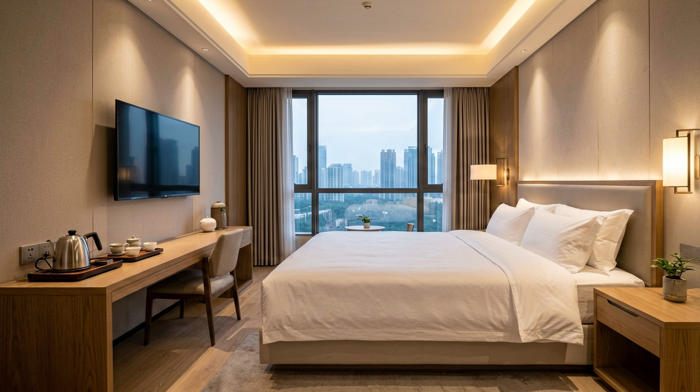
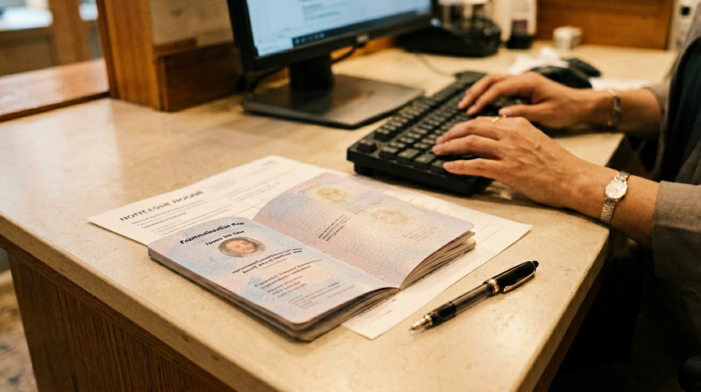

Last updated: June 2026.
Booking a hotel in China is not like booking one anywhere else. You pick a place on your favourite platform, it looks fine, the price is right — and when you arrive at the front desk, the receptionist shakes their head and says they cannot check you in. Not because the hotel is full. Not because your card was declined. Because the hotel is not licensed to accept guests with a non-Chinese passport, and your booking platform never told you. This is not a rare edge case. It happens to travellers every day, and it is the single biggest thing you need to understand about accommodation in China before you book anything.
This article explains the rule that causes this problem, shows you which booking platforms let you filter for hotels that can actually accept you, walks you through what to expect at check-in, and gives you practical advice on choosing a location and understanding what your money buys at different price points. If you are planning to stay anywhere in China that is not a five-star international hotel, read this before you book.
Since the 1980s, Chinese law has required hotels to hold a special licence — called a 涉外酒店 (shewai jiudian) licence — to legally accommodate guests who do not hold a Chinese ID card. The term literally means "foreign-related hotel," and the licence means the hotel has met security and reporting standards set by the Public Security Bureau. Without it, a hotel cannot register a passport holder, and turning you away is not optional — it is the law.
For decades this rule created a two-tier system: a small pool of licensed hotels that could accept international guests, and a much larger pool that could not. In practice, most international chain hotels — Marriott, Hilton, IHG, Accor — have always held the licence. Most budget hotels, independent guesthouses, and hostels historically did not. But in 2024, the National Immigration Administration introduced measures that made it significantly easier for hotels to obtain or renew the licence, and many mid-range and even budget hotels have since come into compliance. The gap is narrowing, but it has not closed.
What this means for you: in major cities and popular tourist destinations, you will almost never encounter this problem if you book through the right platform. In smaller cities, county-level towns, and rural areas, the risk remains real. The practical solution is not to memorise which hotels are licensed — it is to use a booking platform that filters them for you.
Trip.com is the most reliable platform for booking Chinese hotels with a non-Chinese passport. It is the international arm of China's largest travel company, and it has a specific feature the others lack: a filter that identifies properties licensed to accept non-Chinese passport holders. When you search for accommodation on Trip.com, look for properties labelled "Suitable for non-Chinese nationals" or "Foreign guests accepted" in the listing. If a hotel carries this label, you will not be turned away at the desk. Trip.com also accepts international credit cards, displays prices in your home currency, and offers English-language customer support by phone or chat. If you book nowhere else, book here.
Booking.com and Agoda both list Chinese hotels and accept international payment, but they lack the passport filter that makes Trip.com so useful. Many of the budget properties on these platforms — especially hostels, capsule hotels, and small guesthouses — are not licensed for international guests. If you use Booking.com or Agoda, check the hotel's own description or contact the property directly before you commit. A brief message asking "Do you accept non-Chinese passport holders?" can save you a difficult arrival.
Meituan and Ctrip (the domestic version of Trip.com, aimed at the Chinese market) have the widest selection of Chinese hotels, often at slightly lower prices. But their interfaces are almost entirely in Chinese, they typically require a Chinese phone number for booking, and payment often demands a Chinese bank card or Alipay balance. For most international travellers, the small price difference is not worth the friction.
One more option worth knowing: many international hotel chains — Marriott, Hilton, IHG, Hyatt — offer competitive rates when you book directly through their own websites or apps. If you have loyalty status with a global chain, this is often the best route. The chain's website will show the rate in your currency, you earn points, and you are guaranteed acceptance regardless of the hotel's local licence status.

Hotel pricing in China is generally lower than in Western Europe or North America, but the relationship between price and quality is not always linear. Knowing what to expect at each tier helps you spend wisely.
Budget (100 to 300 RMB per night). At this level you get a clean private room with a bed, a private bathroom, air conditioning, and Wi-Fi. These are chain-operated budget hotels — think 7 Days Inn, Hanting, Jinjiang Inn, and Home Inn — that have standardised rooms across hundreds of locations. The room will be functional but small, the mattress firm by Western standards, and the decor basic. Breakfast is usually not included. Many budget chain hotels have obtained the foreign-guest licence since 2024, and Trip.com filters them accordingly. These are a solid, no-frills option if all you need is a bed and a shower.
Mid-range (300 to 800 RMB per night). This is where most travellers will find the best value. At this tier you get a spacious room in a well-maintained Chinese chain — Atour, James Joyce Coffetel, Vienna Hotel, or Orange Hotel — or a standard room in an international chain property in a secondary location. Rooms are larger, beds are more comfortable, breakfast is often included, and the design makes an effort. Atour hotels, for example, are known for their library-style lobbies, good lighting, and consistent quality across cities. This is the tier where the gap between price and experience is widest: a room that would cost three times as much in London or New York.
Upper mid-range to luxury (800 RMB and above). International chain hotels — Marriott, Hilton, InterContinental, Hyatt, Shangri-La — dominate this bracket. Service is professional, English is spoken at the front desk, rooms match global brand standards, and amenities include fitness centres, pools, and multiple dining options. Chinese luxury hotel groups like Wanda and Jin Jiang also operate at this level, but they cater more to domestic business travellers and may have less English-language support. If location, consistency, and service matter more than price, book an international chain directly.
One category that does not fit neatly into these tiers: boutique hotels and renovated courtyard properties in historic districts. In cities like Beijing, Chengdu, and Lijiang, you can find beautifully restored traditional buildings — siheyuan courtyard houses, for example — converted into small hotels. These are typically priced between 400 and 1,200 RMB per night, and the experience is unique. However, many are independently operated and may or may not hold the foreign-guest licence. Always confirm before booking.

When you check into a Chinese hotel, the front desk does more than hand you a key card. By law, the hotel must report your stay to the local Public Security Bureau within 24 hours of your arrival. This process is called temporary residence registration (临时住宿登记), and it happens automatically — you do not need to visit a police station yourself. The receptionist scans your passport, enters your details into the PSB system, and the registration is complete. This is why the hotel needs your physical passport at check-in. A photocopy or a photo on your phone will not work.
The hotel may ask you to fill out a brief registration form. It asks for your name as it appears on your passport, your passport number, your visa type, and your intended departure date. Some hotels also take a deposit — typically a hold on your credit card or a cash deposit of 200 to 500 RMB — which is refunded at checkout if there are no incidental charges.
If you are staying at a private residence — an Airbnb, a friend's apartment, or a relative's home — the registration rule still applies, but the host, not a hotel, is responsible for reporting your stay. In practice, many Airbnb hosts in China either cannot or will not do this, because it requires a trip to the local police station. This is one reason why private short-term rentals through Airbnb and similar platforms carry more risk for passport holders than hotels do. If you choose a private rental, confirm with the host before booking that they are willing and able to complete the registration. If they cannot, you may be breaking the law without knowing it, and you could face a fine or questioning if discovered.
Location matters more in Chinese cities than you might expect. Distances are large, traffic is unpredictable, and a hotel that looks close to the centre on a map can become a daily forty-minute commute if it is on the wrong side of a ring road with no metro station nearby.
The single most useful rule: stay within a five-minute walk of a metro station. In Beijing, Shanghai, Guangzhou, Shenzhen, Chengdu, and most other cities, the metro is fast, cheap, and reliable. A hotel near a metro station means you can reach almost any attraction or restaurant in under thirty minutes. Without metro access, you are dependent on taxis and ride-hailing, which adds cost and eats into your day during rush-hour gridlock. When you search on Trip.com, zoom into the map view, toggle the transit layer, and look for hotels clustered around the coloured metro lines.
Pick a neighbourhood that matches your travel style. In Beijing, the Dongcheng and Xicheng districts put you within walking distance of the Forbidden City, hutongs, and traditional courtyard neighbourhoods — ideal for a first-time visitor. In Shanghai, the former French Concession offers tree-lined streets, independent coffee shops, and Art Deco architecture, while Lujiazui in Pudong puts you among skyscrapers and business hotels. In Chengdu, the area around Chunxi Road and Taikoo Li gives you walkable access to street food, teahouses, and the city's famously laid-back energy. A quick search for your destination city plus "best neighbourhoods" will surface plenty of travel-blog recommendations to narrow your choice.
A few final practical points. Wi-Fi is standard in Chinese hotels, but a VPN — installed before you arrive — is essential if you need access to Google, WhatsApp, Instagram, or any blocked service. Most hotel Wi-Fi networks are open and unblocked at the local level, but China's national firewall still applies. On the subject of breakfast: Chinese hotel breakfasts tend toward savoury dishes — congee, steamed buns, pickled vegetables, boiled eggs — rather than Western-style pastries and cereal. International chain hotels almost always offer a Western breakfast option alongside Chinese selections. If breakfast matters to you, book a rate that includes it or confirm what is available before you arrive. Tipping hotel staff is not expected in China and is not part of the culture.
This article is based on information as of June 2026.
Sources
Regulations and hotel licence status may change. Verify the latest information when booking.